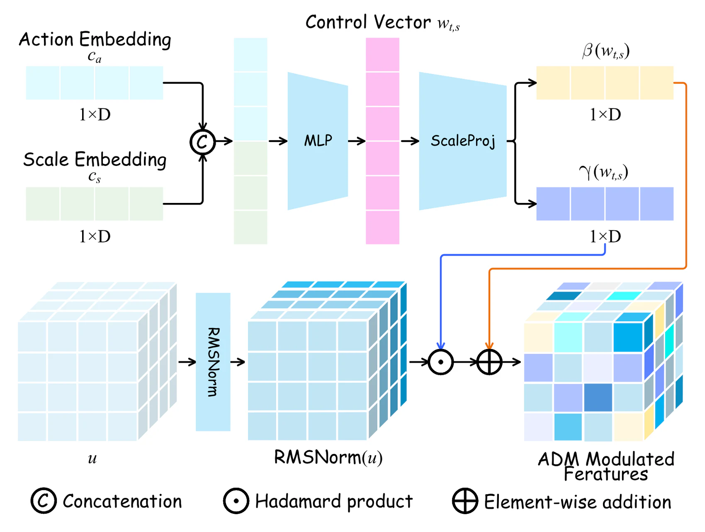
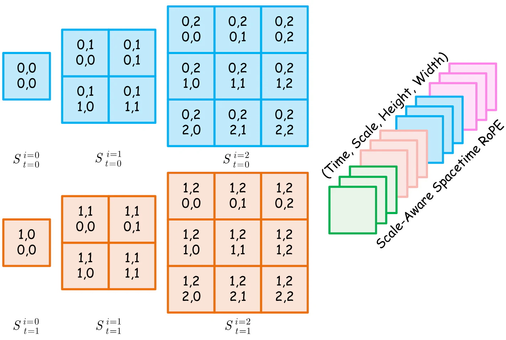
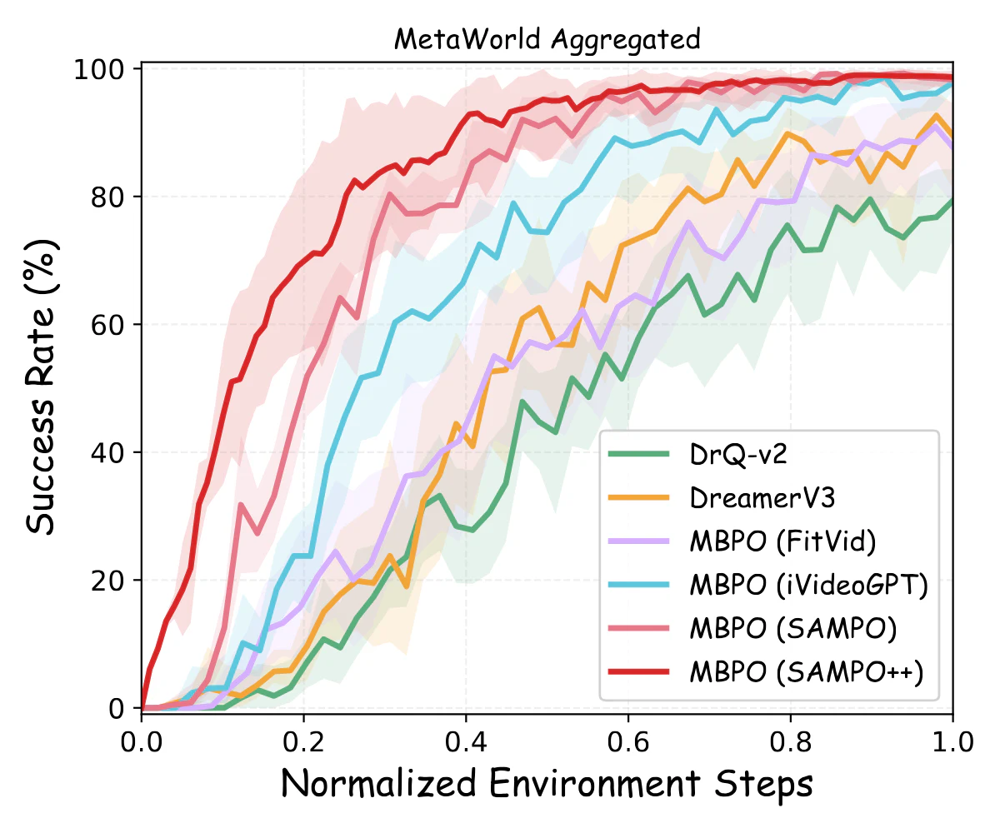

Predict, then refine.
SAMPO++ bridges discrete autoregressive reasoning and continuous high-fidelity synthesis in a single continuous latent-space world model.
Action-conditioned world models must keep causal dynamics coherent while synthesizing detailed future observations. SAMPO++ uses a temporal autoregressive transformer to establish structural priors, then a scale-wise flow matching generator refines future states from noise into high-fidelity visual predictions.
Action-adaptive Dynamics Modulation injects control signals through scale-aware feature statistics, while Scale-Aware spacetime RoPE and flow trajectory rectification reduce long-term structural degradation.
Continuous latent space
Avoids discrete quantization artifacts and resolution bottlenecks.
Temporal autoregression
Builds coarse future structure before visual detail synthesis.
Scale-wise flow matching
Refines future latent scales with high perceptual fidelity.
Action-aware control
ADM and SA-RoPE improve controllability and temporal stability.

SAMPO++ overview
A temporal autoregressive planner predicts structural future priors; a scale-wise flow renderer synthesizes high-fidelity future latent states.

Action-adaptive Dynamics Modulation
Action and scale embeddings modulate feature statistics through scale-aware affine transformations.

Scale-Aware spacetime RoPE
Time, scale, and spatial dimensions receive factorized positional structure to reduce drift.
Sharper futures, better control.
Across robotic video prediction, driving video prediction, and model-based control, SAMPO++ improves both visual quality and downstream planning.
BAIR FVD, 2 → 28 frames52.5
BAIR FVD, 2 → 48 frames64.8
RoboNet FVD, 64×6449.8
BAIR action-conditioned FVD47.6
VP2 average success75.4%

Robust improvements across settings
Ablations show the combined effect of continuous latents, ADM, SA-RoPE, and flow rectification.
Visual results.
Qualitative comparisons cover manipulation, embodied control, and complex driving scenes under long prediction horizons.

BAIR and OpenX-Embodiment
Future frames preserve object structure and interaction dynamics over robotic manipulation sequences.

Cityscapes long-horizon prediction
Driving scenarios remain coherent over long-horizon generation.

OpenDV-YouTube
In-the-wild driving scenes retain robust dynamic modeling and resist visual artifacts.

RoboNet and 1X World Model
Higher-resolution robotic prediction demonstrates detailed action-conditioned synthesis.

VP2 benchmark
Visual planning examples from RoboDesk and RoboSuite.

Meta-World tasks
Predicted trajectories align with reward-bearing state changes.

Model-based RL curves
Task-specific success rates across Meta-World control tasks.

Aggregated Meta-World performance
Interquartile mean and confidence intervals summarize control performance over multiple seeds and tasks.
Citation.
Please cite the arXiv paper and repository if this project helps your research.
@article{wang2025sampopp,
title = {Unified Temporal Autoregression and Scale-Wise Flow Matching for Embodied World Models},
author = {Wang, Sen and Zhou, Sanping and Dong, Huaiyi and Xia, Kun and Hua, Gang and Wang, Le},
journal = {arXiv preprint arXiv:2509.15536},
year = {2025}
}
Project page for SAMPO++.